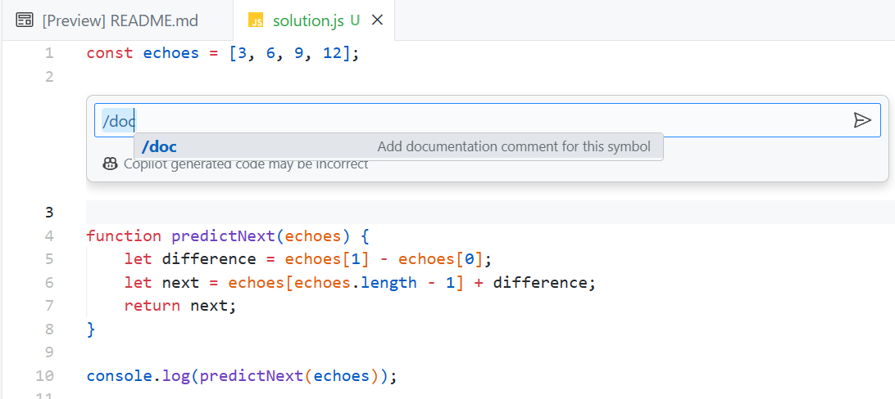

GitHub Copilot 热身冒险

GitHub Copilot 是一位 AI 编程伙伴，帮助你编写更好的代码。在这个热身冒险中，你将了解 Copilot 并亲自试用。以下是使用 GitHub Copilot 可以做的一些事情：
- 将注释转换为代码。需要发起 HTTP 请求，过滤数组，或执行其他任务？写一个注释，Copilot 会为你将其转换为代码。
- 创建用户界面。可以使用纯 HTML/CSS/JavaScript 或你选择的库/框架。
- 创建 SQL 查询。
- 创建单元测试。
- 编写新语言的代码。
- 解释你正在编写的代码。
- 还有更多！
如果你是 GitHub Copilot 的新手，请观看此视频，了解它为你的开发工作流程带来的好处。观看视频后，返回此处选择一个冒险开始。
开始：安装 GitHub Copilot 插件
按照以下步骤在 Visual Studio 或 Visual Studio Code 中安装 GitHub Copilot 插件。
-
安装 Visual Studio 或 Visual Studio Code 如果你还没有安装的话。
-
按照步骤在 https://docs.github.com/en/copilot/getting-started-with-github-copilot 安装 GitHub Copilot。
如果我没有 GitHub Copilot 许可证怎么办？
你是学生吗？ 了解如何 设置和访问 GitHub Copilot。
如果你目前没有 GitHub Copilot 许可证，你可以：
你的第一个冒险：回声之室
让我们开始你的第一个冒险！

背景：
在最高的山丘上俯瞰王国，矗立着庄严的回声城堡。在它的石墙内有一个被称为回声室的房间。这个房间与其他任何房间不同，它有神秘的力量可以回应任何进入者的数字。然而，回声室不仅仅是简单地回应数字；它总是回应序列中的下一个数字。
传说中，一位巫师为测试游客的智慧而施了魔法。房间会按序列回应数字，只有那些能够预测下一个回声的人才有资格获得城堡中的隐藏宝藏。
任务目标：
你的任务是进入回声室并听取它的序列，然后预测它将回应的下一个数字。你会收到房间过去回应的一系列数字。使用这些数字来确定序列中的下一个数字。
规格：
-
输入：
- 包含至少三个数字的列表，它们形成一个序列。这个列表代表房间过去回应的数字。
-
输出：
- 一个代表序列中下一个数字的单一数字。
-
假设：
- 序列将始终是等差数列（连续数字之间的差值是恒定的）。
样本数据：
考虑序列： [3, 6, 9, 12]
房间回应的下一个数字应为：15
约束条件：
- 以下解决方案使用 JavaScript 和 Node.js，但你也可以使用 Copilot 用其他语言来编写代码。
高级任务总结：
- 使用控制台应用程序呈现输出。
- 创建一个常量来存储提供的数字序列。
- 确定连续数字之间的公差。
- 使用已识别的模式预测序列中的下一个数字。
GitHub Copilot 步骤
此解决方案使用 JavaScript 和 Node.js。如果你愿意的话，可以使用其他语言/框架。
-
在你选择的文件夹中创建一个名为
echo-chamber.js的文件。 -
在文件中添加一个
const常量来存储数字序列：js const echoes = [3, 6, 9, 12]; -
在
echoes常量之后输入以下代码。Copilot 应该会建议帮助你确定序列中连续数字之间的差异的代码。js function predictNext(echoes) { -
按 Tab 键接受建议。应该添加以下函数体。注意，你可能会看到不同的代码建议。
js function predictNext(echoes) { let difference = echoes[1] - echoes[0]; let next = echoes[echoes.length - 1] + difference; return next; } -
在函数之后输入新行，Copilot 应该会建议类似的代码。如果没有，请开始键入
console.log。按 Tab 键接受建议。js console.log(predictNext(echoes)); -
将光标移动到
predictNext函数上方，然后选择 CTRL + i（Windows）或 CMD + i（Mac）。 -
在出现的文本框中输入
/doc并按 Enter。你应该会看到为该函数生成的注释。
-
选择
Accept接受建议。 -
你应该会看到为该函数生成的注释。
注意：除了生成文档，你还可以使用注释生成代码。
-
现在假设你想存储房间之前回应数字的“记忆”。在
echoes变量之后添加以下代码。js const memories = []; -
在
predictNext函数中的return next语句上方立即添加以下注释，并按 Enter。按 Tab 键接受建议。js // 存储包括预测数字在内的完整序列到 memories 中 -
你应该会看到生成类似于以下的代码：
js memories.push(...echoes, next); -
保存
echo-chamber.js并在创建文件的文件夹中打开终端窗口。 -
运行以下命令以执行代码。这假设你已经安装了 Node.js。
bash node echo-chamber.js -
你应该会看到
15打印到控制台，这是序列中的下一个数字。 -
通过添加注释，看看是否能让 Copilot 为你输出 memories。
回声城堡的隐藏宝藏现在属于你！

你已经完成了你的第一个 GitHub Copilot "热身"冒险！查看位于 Adventures 文件夹中的其他冒险，了解 GitHub Copilot 的其他用法。